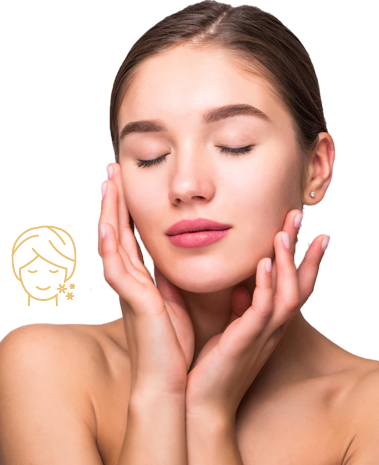

Preparación de la Piel antes del Maquillaje

Una piel bien hidratada asegura que la base no se cuartee y dure el doble de tiempo.
Paso 1: Limpieza Profunda
Utiliza agua micelar o un limpiador en gel suave para retirar cualquier impureza del rostro.
Paso 2: Tonificación e Hidratación
Aplica un tónico equilibrante seguido de tu crema hidratante de preferencia según tu tipo de piel.